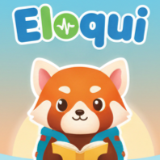

Select language and load the text file.
Initializing Python runtime...
Press "Start Listening" and read the text aloud. The app will wait patiently for you. You can click on any word to skip ahead or jump back manually.